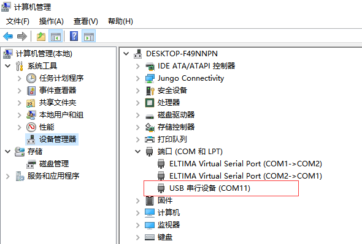
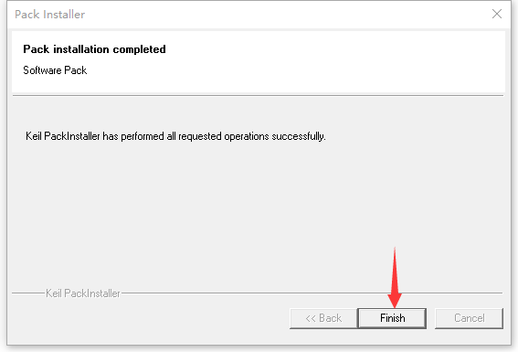
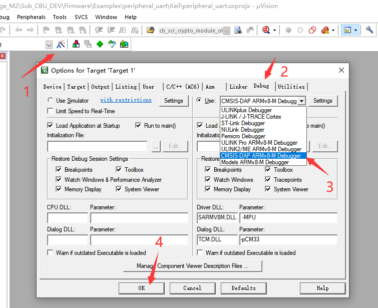
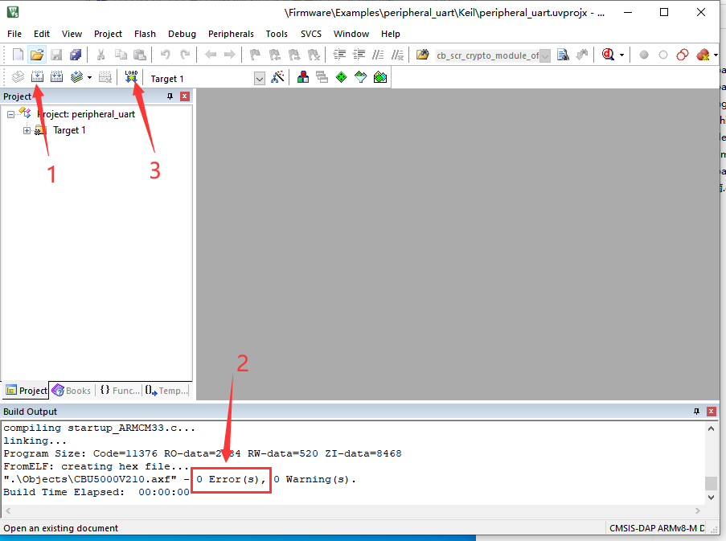
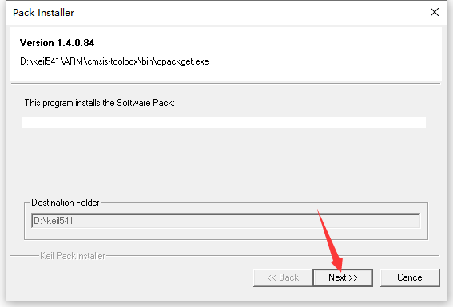

Getting Started Guide
概述
本指南旨在指导用户通过设置必要的软件环境来使用CBU5000V210芯片进行硬件开发。在获取我们的SDK后，用户将学习如何：
配置所需的开发工具和软件。
连接硬件组件，包括开发板和PC。
编译和下载示例项目，例如
peripheral_uart例程。使用串口助手进行测试。
基于提供的示例扩展和开发自己的应用程序。
通过遵循本指南，用户将能够有效地使用SDK在CBU5000V210开发板上开发和测试应用程序。
准备工作
硬件
CBU5000V210开发板：作为硬件开发的核心设备。
USB数据线（支持数据传输）：用于将开发板连接到PC，实现数据传输和供电。
PC（Windows系统）：运行开发工具和测试软件的平台。
软件
编译工具：Keil v5.41或更高版本。用于编译应用程序并为开发板生成可执行固件。
串口助手：如SSCOM。用于测试开发板的串口功能并显示通信结果。
SDK开发包：包含所需的API（软件库和源代码）以及基于Keil的示例项目。
设置开发环境
1. 安装Keil IDE开发工具
访问官方Arm Keil网站 (https://www.keil.com/download/product/) 下载最新的Keil开发工具，并按照安装向导完成安装。
2. 获取SDK
在基于CBU5000V210芯片开发应用程序之前，可以从ChipsBank提供的指定GitHub仓库获取最新的SDK。
3. 安装软件包
安装Keil工具后，需要安装CBU5000V210芯片的软件包。具体步骤如下：
步骤1：定位软件包。软件包位于SDK的
\Tools\pack路径下，文件名为Chipsbank.CBU5000V210_DFP.1.0.0.pack。双击该文件以运行安装程序。步骤2：进行安装。在安装向导中，点击``Next``。
安装步骤2
步骤3：完成安装。成功安装后，将显示``Finish``提示。点击“完成”以完成软件包安装。如果安装失败，请从步骤1重新开始。
安装步骤3
{kind=link}
{kind=link}
创建第一个项目
从SDK的 \Firmware\Examples 目录中选择一个例程进行开发。本指南以 peripheral_uart 例程为例。您可以复制并重命名该项目以便后续开发。该目录中的所有项目都可以直接编译，也可以基于这些例程进行二次开发。
连接设备
使用支持数据传输的USB数据线将CBU5000V210锚点开发板连接到PC。同时，将开发板上的USB转串口接口连接到芯片的串口，其中 TX 连接到 GPIO00 ， RX 连接到 GPIO01 （您可以参考开发板原理图 demo kit CBD5213 以确认连接）。
1. 驱动安装
如果使用USB数据线下载，无需安装驱动。如果使用其他下载方法（如ST-Link、J-Link等），可以从网上下载相应的驱动并安装。
2. 查看端口
打开设备管理器，查看“端口（COM和LPT）”中的COM端口列表。断开USB串口线与PC的连接，然后重新连接。观察列表中消失后又重新出现的端口。该端口即为开发板的串口。
Windows设备管理器中的USB串口
编译和下载
选择下载方法：点击
Options for Target...，选择Debug，并根据实际需求选择下载方法。本教程使用USB下载方法，因此选择CMSIS_DAP. ARMv8-M Debugger。选择调试下载模式
{kind=link}
完成上述操作后，可以开始编译和下载过程。如果编译过程中没有错误，可以直接下载固件。
{kind=link}
固件下载
下载完成后，打开串口助手。配置参数如下：
波特率：115200
停止位：1
数据位顺序：LSB
校验位：NONE
配置完上述参数后，启用串口。按下开发板上的复位按钮，然后通过串口助手发送任何数据。这里我们发送 hello world ! 。
预期输出
app_uart_echo_demo
hello world !
如果您得到上述结果，恭喜您完成了CBU5000V210芯片的入门学习。现在您可以尝试其他例程，或者开始开发自己的应用程序。
Overview
This document aims to guide users through the process of setting up the necessary software environment for hardware development using the CBU5000V210 chip. After obtaining our SDK, users will learn how to:
Configure the required development tools and software.
Connect the hardware components, including the development board and the PC.
Compile and download example projects, such as the peripheral_uart routine.
Use the serial assistant for testing.
Extend and develop their own applications based on the provided examples.
By following this guide, users will be able to effectively use the SDK to develop and test their applications on the CBU5000V210 development board.
Preparatory work
Hardware
CBU5000V210 anchor Demo board: It serves as the core device for hardware development.
USB data cable (capable of data transmission): Used to connect the development board to a PC, enabling data transfer and power supply.
PC (Windows system): The platform for running development tools and testing software.
Software
Compilation tool: Keil v5.41 or higher versions. It is used to compile application programs and generate executable firmware for the development board.
Serial port assistant: Such as SSCOM. It is used to test the serial port function of the development board and display communication results.
SDK development package: It contains the required APIs (software libraries and source codes) and Keil-based example projects.
Setting up the development environment
1. Installing the Keil IDE development tool
Visit the official Arm Keil website (https://www.keil.com/download/product/) to download the latest Keil development tool, and complete the installation following the installation wizard.
2. Obtaining the SDK
Before developing applications based on the CBU5000V210 chip, you can obtain the latest SDK from the specified GitHub repository provided by ChipsBank.
3. Installing the software package
After installing the Keil tool, it is necessary to install the software package for the CBU5000V210 chip. The specific steps are as follows:
Step 1: Locate the software package. The software package is located in the
\Tools\packpath of the SDK, with the file nameChipsbank.CBU5000V210_DFP.1.0.0.pack. Double-click this file to run the installation program.Step 2: Proceed with the installation. In the installation wizard, click
Next.Installation step 2
Step 3: Complete the installation. After a successful installation, a
successfullyprompt will be displayed. ClickFinishto complete the software package installation. If the installation fails, please start from step 1 again.Installation step 3
{kind=link}
Creating your first project
Select a routine from the \Firmware\Examples directory of the SDK for development. This guide takes the peripheral_uart routine as an example. You can copy and rename this project for convenient subsequent development. All projects in this directory can be directly compiled, and you can also conduct secondary development based on the routines.
Connecting the device
Connect the CBU5000V210 anchor Demo board to a PC using a USB data cable capable of data transmission. At the same time, connect the USB-to-serial port interface on the development board to the serial port of the chip, with TX connected to GPIO00 and RX connected to GPIO01 (you can refer to the development board schematic diagram demo kit CBD5213 to confirm the connection).
1. Drive installation
If you use a USB cable to download, you do not need to install the driver. If you use other download methods (such as ST-Link, J-Link, etc.), you can download the corresponding driver from the Internet and install it.
2. Viewing the Port
Open the Device Manager and view the COM port list in “Ports (COM and LPT)”. Disconnect the USB serial port cable from the PC and then reconnect it. Observe which port in the list disappears and then reappears. This port is the serial port of the development board.
USB serial port for Windows Device Manager
Compiling and downloading
Select the download method: Click
Options for Target..., selectDebug, and select the download method according to actual requirements. In this tutorial, the USB download method is used, so selectCMSIS_DAP. ARMv8-M Debugger.Select debug download mode
After completing the above operations, you can start the compilation and download process. First, if there are no errors during compilation, you can directly download the firmware.
Firmware download
After the download is completed, open the serial port assistant. Configure the parameters as follows:
Baud rate: 115200
Stop bit: 1
Bit order: LSB
Parity bit: NONE
After configuring the above parameters, enable the serial port. Press the reset button on the development board, and then send any data through the serial port assistant. Here, we send hello world !.
Expected Output
app_uart_echo_demo
hello world !
If you get the above results, congratulations you have completed the Introductory study of the CBU5000V210 chip,Now you can try some other routines, or just start developing your own application